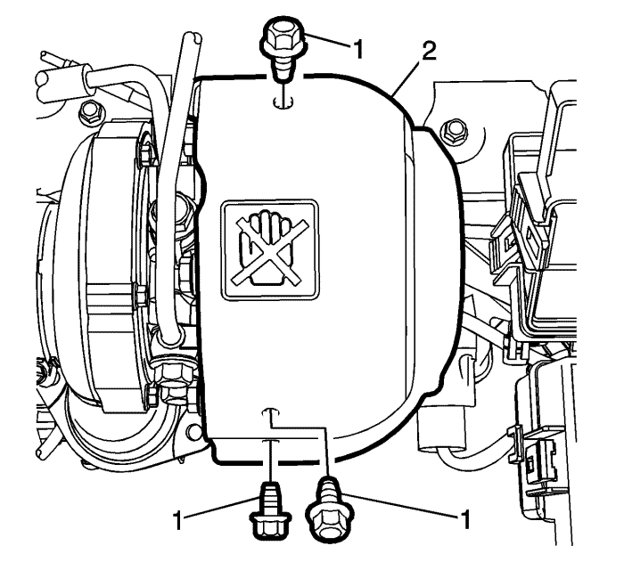
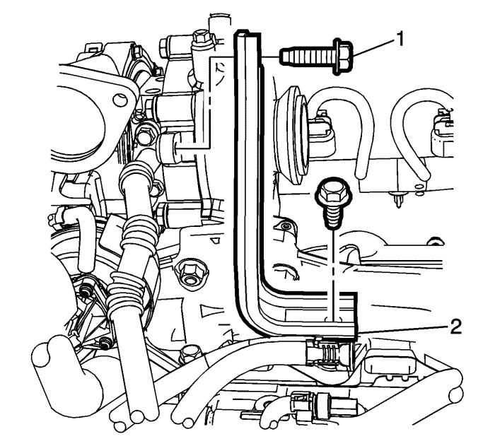
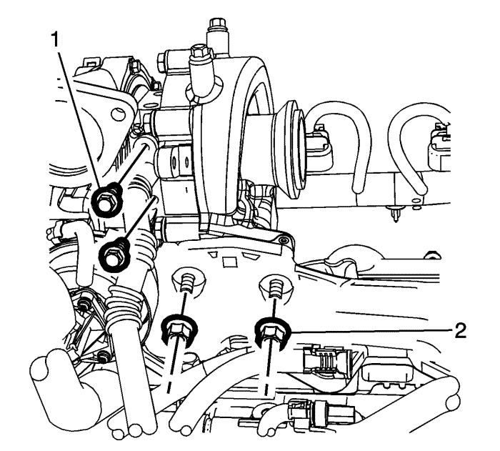
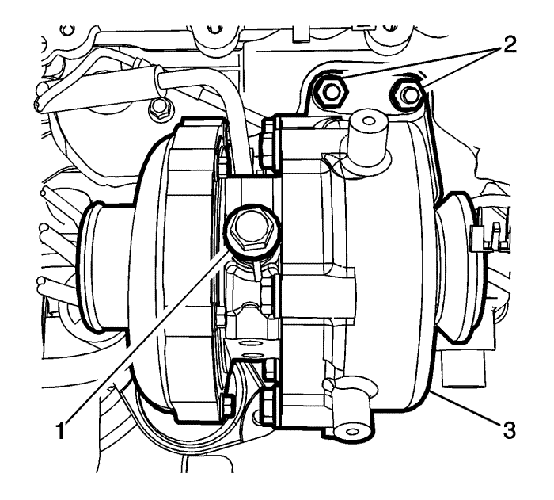

Sustitución del turbocompresor
Procedimiento de desmontaje
Atención: Si el turbocompresor tiene una avería, limpie las partículas o exceso de aceite del sistema del intercooler antes de instalar un nuevo turbocompresor. Si no elimina las partículas del sistema del intercooler, el turbocompresor y el motor sufrirán graves daños en el arranque. Si no retira el exceso de aceite del sistema del intercooler podría causar la pérdida de control del motor en el arranque, hecho que causaría daños graves en el motor.
- Retire el conducto de salida del purificador de aire. Consultar Sustitución del conjunto del filtro de aire .
- Desmontar la pantalla de protección del motor. Consultar Sustitución del protector del motor .
- Desmonte el catalizador de partículas diesel. Consultar Sustitución del filtro de partículas del escape : LNQ .
- Desmonte el conducto de entrada de aire de carga. Consultar Sustitución del conducto de entrada del intercooler .
- Desconecte el tubo de retorno de refrigerante del turbcompresor en el turbo. Consultar Sustitución de la tubería de retorno de refrigerante del turbocompresor : LNQ .
- Desconecte el tubo de alimentación de refrigerante del turbcompresor en el turbo. Consultar Sustitución del tubo de alimentación de refrigerante del turbocompresor : LNQ .

- Retire los pernos de la pantalla térmica del turbocompresor (1).
- Retire la pantalla térmica (2) del turbocompresor.

- Retire los pernos del soporte del turbocompresor (1).
- Retire el soporte (2).

- Quite los pernos de la tubería de retorno de aceite del turbocompresor (1).
- Retire las tuercas de fijación inferiores del turbocompresor (2).

- Extraiga la tubería de alimentación de aceite del turbocompresor (1).
- Retire los pernos de fijación superiores del turbocompresor (2).
- Desmonte el turbocompresor (3).
- Desconecte el conector eléctrico si es necesario.
- Transfiera las piezas según sea necesario.
Procedimiento de montaje
Atención: No gire la tubería de alimentación de aceite del turbocompresor. Si la gira, la tubería de plástico se plegará y deformará, limitando el flujo de aceite y provocando daños en el turbocompresor. Cuando cambie un turbocompresor, empuje suavemente la tubería de alimentación de aceite hacia la parte delantera del motor para despejar el turbocompresor. Puede que necesite ayuda para mantener limpias las tuberías del turbocompresor durante su montaje y desmontaje.
- Instale una nueva junta de turbocompresor.
- Monte el conjunto de turbocompresor (3).
Precaución: Consulte Precaución con las fijaciones en la sección Prólogo
- Coloque los pernos de fijación del turbocompresor (2) y apriételos hasta 30 N·m (22 lib. pie).
- Monte el tornillo del conducto de alimentación de aceite del turbocompresor (1) y apriételos hasta 32 N·m (24 lib. pie).
- Elevar el vehículo
- Monte los tornillos del conducto de retorno de aceite del turbo (1) y apriételos hasta 10 N·m (89 lib. pulg.).
- Coloque las tuercas de fijación del turbocompresor (2) y apriételas hasta 30 N·m (22 lib. pie).
- Monte el soporte del turbocompresor (2) y los pernos (1). Apriete los tornillos a 35 N·m (26 lib. pie).
- Monte la pantalla térmica del turbocompresor (2).
- Monte los tornillos superiores de la pantalla térmica del turbocompresor (1) y apriételos hasta 10 N·m (89 lib. pulg.).
- Conecte el tubo de alimentación de refrigerante del turbcompresor en el turbo. Consultar Sustitución del tubo de alimentación de refrigerante del turbocompresor : LNQ .
- Conecte el tubo de retorno de refrigerante del turbcompresor en el turbo. Consultar Sustitución de la tubería de retorno de refrigerante del turbocompresor : LNQ .
- Monte el conducto de entrada de aire de carga. Consultar Sustitución del conducto de entrada del intercooler .
- Monte el catalizador de partículas diesel. Consultar Sustitución del filtro de partículas del escape : LNQ .
- Monte el protector del motor. Consultar Sustitución del protector del motor .
- Monte el conducto de salida del filtro de aire. Consultar Sustitución del conjunto del filtro de aire .
- Sustituya el filtro de aceite y llene el sistema de aceite del motor. Consultar Sustitución del aceite de motor y filtro de aceite. .
| © Copyright Chevrolet Europe. All rights reserved |